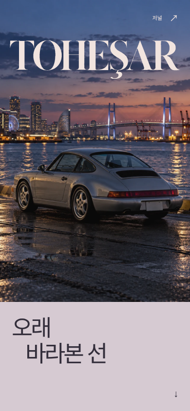
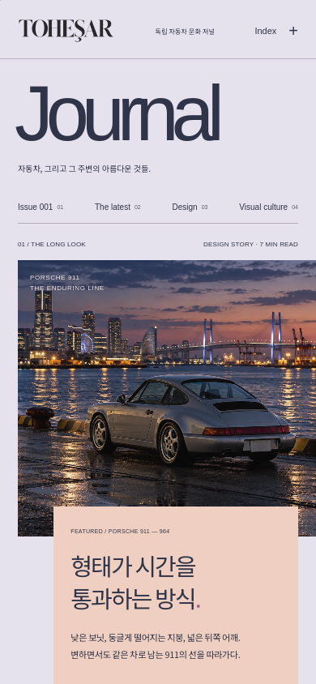
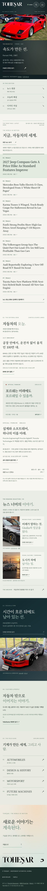

독립적인 첫 장.
은빛 911, 요코하마, 워드마크, 스크롤 액자 연출과 Journal 이동을 그대로 보존했습니다. 첫 화면과 프레임 상태를 모두 비교할 수 있습니다.
 ART DIRECTION / REVIEW 015 · 29 OCT 2026
ART DIRECTION / REVIEW 015 · 29 OCT 2026사진이 먼저 말을 걸고, 문화와 뉴스가 각자의 속도로 읽히는 지면. COVER 004의 독립성을 지키면서 Journal의 사진 중심 구도와 Newsroom의 정보 구조를 다시 편집했습니다.
은빛 911, 요코하마, 워드마크, 스크롤 액자 연출과 Journal 이동을 그대로 보존했습니다. 첫 화면과 프레임 상태를 모두 비교할 수 있습니다.
뉴스 삽입 블록이 사진을 밀어내던 구조를 없앴습니다. 첫 사진 시작점은 1,151px에서 336px로, Beauty 014의 321px에 가까워졌습니다. 서로 다른 비율의 사진, 작은 이슈 재킷, 들여쓴 역사·도시 이야기로 리듬을 만들었습니다.
별도 표제, 사진 중심의 편집 기사, 출처·제목·날짜를 읽는 목록, 한국어 브리핑으로 구획을 나눴습니다. 검색 화면은 필터를 먼저 보여줍니다. 반복되는 안내 섹션과 그라데이션 마무리는 제거했습니다.
WebKit·Chromium / 320, 375, 390, 430, 768, 1024, 1194, 1440px / 8경로, 128개 화면 검사 통과. 검색, 필터, 12→24건 더 보기, 저장·삭제, 목차, 출처, 아카이브, 뒤로 가기, 503·과거 자료 안내, 모션 감소, JS 없는 탐색을 검증했습니다.
수집기 14개 테스트 통과. 실제 수집은 45건 / 3개 발행처 정상, BMW는 기존의 허용 범위 밖 리디렉션으로 제외되어 partial입니다. 원문·일정·출처 표시는 유지했으며 트래킹 스냅샷을 덮어쓰지 않았습니다.
브라우저 검사 결과 ↗보호 파일 156개 해시 ↗실제 수집 결과 ↗레이아웃 측정 ↗Journal의 첫 사진, 이슈 재킷 이후의 서로 다른 사진 크기, 요코하마의 세로 지면, Newsroom의 원문 목록, 모바일 검색 필터의 접근 순서를 살펴보세요. 영어 헤드라인은 번역을 꾸며 넣지 않고 실제 원문 그대로 남겼습니다.
과거 캡처의 일부 빈 사진 영역은 현재 재현되지 않았습니다. 이를 이미지 장애로 간주해 수정하지 않았습니다. 015의 첫 구현 이후 iPad 표제의 높이와 모바일 필터 정렬을 한 차례 더 조정한 결과입니다.
변경 구조·검증·재실행 안내 ↗원래 보존된 파일입니다. 위 비교는 동일한 브랜치를 이 환경에서 새로 렌더링한 화면이며, 날짜·피드와 브라우저 차이가 있을 수 있습니다.


